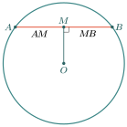
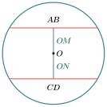
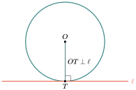
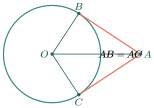
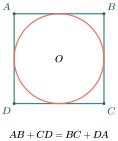
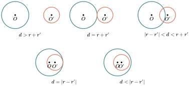
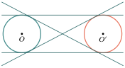

- បង្ហាញពីលក្ខណៈនៃអង្កត់ធ្នូ
- បង្ហាញពីលក្ខណៈនៃបន្ទាត់ប៉ះនៃរង្វង់
- អនុវត្តលក្ខណៈបន្ទាត់ប៉ះនៃរង្វង់ទៅនឹងជ្រុងនៃត្រីកោណចារឹកក្រៅរង្វង់
- រកអង្កត់ធ្នូនិងចម្ងាយដោយប្រើលក្ខណៈទីតាំងនៃរង្វង់
សួស្តីប្អូនៗ! នៅក្នុងមេរៀននេះ យើងនឹងមកស្វែងយល់ពីទំនាក់ទំនងរវាងបន្ទាត់ និងរង្វង់។ តើមានអ្វីកើតឡើងពេលបន្ទាត់មួយកាត់រង្វង់? ចុះបើវាគ្រាន់តែប៉ះរង្វង់ត្រង់មួយចំណុច? ហើយចុះបើមានរង្វង់ពីរ តើពួកវាអាចមានទំនាក់ទំនងគ្នាបែបណាខ្លះ? តោះ ទៅរៀនទាំងអស់គ្នា!
A. លក្ខណៈនៃអង្កត់ធ្នូ
បន្ទាត់កែងទៅនឹងចំណុចកណ្ដាលនៃអង្កត់ធ្នូ
ជាទូទៅ ៖
- បន្ទាត់ដែលគូសចេញពីផ្ចិតនៃរង្វង់ ហើយកែងនឹងអង្កត់ធ្នូ ត្រូវកាត់ចំណុចកណ្ដាលនៃអង្កត់ធ្នូនោះ។
- ច្រាសមកវិញ៖ បន្ទាត់ដែលកែងទៅនឹងចំណុចកណ្ដាលនៃអង្កត់ធ្នូ ត្រូវកាត់តាមផ្ចិតនៃរង្វង់។

គេមានរង្វង់ផ្ចិត \(\displaystyle O\) និងអង្កត់ធ្នូ \(\displaystyle AB = 10\text{cm}\) ។ បើកាំ \(\displaystyle OC\) កែងទៅនឹង \(\displaystyle AB\) ត្រង់ \(\displaystyle M\) គណនាប្រវែង \(\displaystyle AM\) ។
១. គិត៖ ដោយសារកាំ \(\displaystyle OC\) កែងនឹងអង្កត់ធ្នូ \(\displaystyle AB\) វាត្រូវតែកាត់ចំណុចកណ្ដាលនៃអង្កត់ធ្នូ។
២. ជ្រើសវិធី៖ ប្រើទ្រឹស្តីបទបន្ទាត់កែងទៅនឹងអង្កត់ធ្នូ ដើម្បីទាញយក \(\displaystyle AM\) ។
៣. ធ្វើ៖ ដោយ \(\displaystyle OM\) (ផ្នែកនៃ \(\displaystyle OC\)) គូសចេញពីផ្ចិត \(\displaystyle O\) និងកែងទៅនឹងអង្កត់ធ្នូ \(\displaystyle AB\) គេបាន \(\displaystyle M\) ជាចំណុចកណ្ដាលនៃ \(\displaystyle AB\)។
ដូចនេះ \(\displaystyle AM = 5\text{cm}\) ។
៤. ពិនិត្យ៖ កន្លះអង្កត់ធ្នូពិតជាមានប្រវែងពាក់កណ្តាលនៃអង្កត់ធ្នូទាំងមូលមែន ត្រឹមត្រូវ!
គេមានរង្វង់ផ្ចិត \(\displaystyle O\) និងអង្កត់ធ្នូ \(\displaystyle AB\) មួយ។ បើចម្ងាយពីផ្ចិត \(\displaystyle O\) ទៅអង្កត់ធ្នូគឺ \(\displaystyle OM = 5\text{cm}\) ហើយកាំរង្វង់ \(\displaystyle OB = 7\text{cm}\) តើអង្កត់ធ្នូ \(\displaystyle AB\) មានប្រវែងប៉ុន្មាន?
១. គិត៖ យើងស្គាល់ចម្ងាយ \(\displaystyle OM\) និងកាំ \(\displaystyle OB\)។ \(\displaystyle OM\) កែងនឹង \(\displaystyle AB\) ត្រង់ \(\displaystyle M\) ដូច្នេះបង្កើតបានត្រីកោណកែង \(\displaystyle OMB\) ។
២. ជ្រើសវិធី៖ ប្រើទ្រឹស្តីបទពីតាគ័រក្នុងត្រីកោណកែង \(\displaystyle OMB\) ដើម្បីរក \(\displaystyle MB\) រួចគុណនឹង \(\displaystyle 2\) ព្រោះ \(\displaystyle M\) ជាចំណុចកណ្ដាល \(\displaystyle AB\)។
៣. ធ្វើ៖ ក្នុង \(\displaystyle \Delta OMB\) ជាត្រីកោណកែងត្រង់ \(\displaystyle M\):
ដោយ \(\displaystyle OM\) កែងនឹងអង្កត់ធ្នូ \(\displaystyle AB\) នោះ \(\displaystyle M\) ជាចំណុចកណ្ដាល។
៤. ពិនិត្យ៖ \(\displaystyle MB \approx 4.9\) ដែលតូចជាងកាំ \(\displaystyle 7\) ត្រឹមត្រូវ។ ហើយ \(\displaystyle AB\) គឺពីរដងនៃ \(\displaystyle MB\) ។
គេមាន \(\displaystyle O\) ជាផ្ចិតនៃរង្វង់មួយ។ អង្កត់ធ្នូ \(\displaystyle AB = 25\text{cm}\) ។ \(\displaystyle OM\) គូសកែងនឹង \(\displaystyle AB\) ត្រង់ \(\displaystyle M\)។ គណនាប្រវែង \(\displaystyle AM\) និង \(\displaystyle MB\) ។
អង្កត់ធ្នូស្មើគ្នា

ជាទូទៅ ៖ អង្កត់ធ្នូពីរមានប្រវែងស្មើគ្នានៅក្នុងរង្វង់មួយ ត្រូវមានចម្ងាយស្មើគ្នាពីផ្ចិតនៃរង្វង់នោះ។
ច្រាសមកវិញ ៖ អង្កត់ធ្នូក្នុងរង្វង់មួយដែលមានចម្ងាយស្មើគ្នាពីផ្ចិតនៃរង្វង់ ជាអង្កត់ធ្នូស្មើគ្នា។
គេមានរង្វង់ផ្ចិត \(\displaystyle O\) ដែលមានកាំ \(\displaystyle 10\text{cm}\) ។ អង្កត់ធ្នូ \(\displaystyle PR = QS\) ហើយចម្ងាយពីផ្ចិតទៅ \(\displaystyle PR\) គឺ \(\displaystyle OC = 6\text{cm}\) ។ ចូរគណនាចម្ងាយពីផ្ចិតទៅ \(\displaystyle QS\) និងប្រវែងអង្កត់ធ្នូ \(\displaystyle PR\) ។
១. គិត៖ យើងមានអង្កត់ធ្នូពីរស្មើគ្នា ដូច្នេះវានឹងមានចម្ងាយស្មើគ្នាពីផ្ចិត។ ដើម្បីរកប្រវែងអង្កត់ធ្នូ យើងអាចរកកន្លះអង្កត់ធ្នូដោយប្រើពីតាគ័រ។
២. ជ្រើសវិធី៖ ប្រើលក្ខណៈអង្កត់ធ្នូស្មើគ្នា ដើម្បីទាញរកចម្ងាយទៅ \(\displaystyle QS\)។ រួចប្រើទ្រឹស្តីបទពីតាគ័រក្នុងត្រីកោណកែងដើម្បីរក \(\displaystyle PR\) ។
៣. ធ្វើ៖ តាង \(\displaystyle OD\) ជាចម្ងាយពីផ្ចិតទៅអង្កត់ធ្នូ \(\displaystyle QS\)។ ដោយ \(\displaystyle PR = QS\) នោះចម្ងាយពីផ្ចិតទៅពួកវាត្រូវតែស្មើគ្នា ពោលគឺ \(\displaystyle OD = OC = 6\text{cm}\) ។
គណនាប្រវែង \(\displaystyle PR\): ក្នុងត្រីកោណកែង \(\displaystyle OCR\) (ដែល \(\displaystyle R\) នៅលើរង្វង់, \(\displaystyle OR=10\) ជាកាំ)
ដោយ \(\displaystyle OC \perp PR\) នាំឱ្យ \(\displaystyle C\) ជាចំណុចកណ្ដាល \(\displaystyle PR\) ។ ដូច្នេះ \(\displaystyle PR = 2CR = 2 \times 8 = 16\text{cm}\) ។
៤. ពិនិត្យ៖ \(\displaystyle CR = 8, OC = 6, OR = 10\) ជាកន្សោមពីតាគ័រ (6, 8, 10) ត្រឹមត្រូវ។
B. បន្ទាត់ប៉ះ
តើប្អូនៗធ្លាប់ឃើញកង់រទេះវិលលើដីទេ? ដីនោះប្រៀបដូចជាបន្ទាត់ដែលប៉ះកង់រង្វង់ត្រង់មួយចំណុចអញ្ចឹង។ យើងហៅវាថា បន្ទាត់ប៉ះ (Tangent line)។
ជាទូទៅ ៖ បន្ទាត់ប៉ះនៃរង្វង់ត្រូវកែងទៅនឹងកាំ (ឬអង្កត់ផ្ចិត) នៃរង្វង់ត្រង់ចំណុចប៉ះនោះ។

\(\displaystyle O\) ជាផ្ចិតនៃរង្វង់ ។ \(\displaystyle TA\) ជាបន្ទាត់ប៉ះទៅនឹងរង្វង់ត្រង់ \(\displaystyle A\) ។ បើ \(\displaystyle OA=TA\) ចូរគណនារង្វាស់មុំនៃត្រីកោណ \(\displaystyle OTA\) ។
១. គិត៖ យើងមានបន្ទាត់ប៉ះ \(\displaystyle TA\) ដូច្នេះមុំរវាង \(\displaystyle TA\) និងកាំ \(\displaystyle OA\) ត្រូវតែកែង (\(\displaystyle 90^\circ\))។ ដោយ \(\displaystyle OA = TA\) ត្រីកោណនេះជាត្រីកោណសមបាតផងដែរ។
២. ជ្រើសវិធី៖ ប្រើលក្ខណៈបន្ទាត់ប៉ះ និងលក្ខណៈត្រីកោណកែងសមបាត។
៣. ធ្វើ៖ ដោយ \(\displaystyle TA\) ជាបន្ទាត់ប៉ះត្រង់ \(\displaystyle A\) នោះ \(\displaystyle OA \perp TA \Rightarrow \angle OAT = 90^\circ\) ។
ក្នុង \(\displaystyle \triangle OTA\) មាន \(\displaystyle \angle OAT = 90^\circ\) និង \(\displaystyle OA = TA\) ដូច្នេះវាជាត្រីកោណកែងសមបាត។ ក្នុងត្រីកោណកែងសមបាត មុំស្រួចទាំងពីរស្មើគ្នា គឺ៖
៤. ពិនិត្យ៖ ផលបូកមុំទាំងបី \(\displaystyle 90^\circ + 45^\circ + 45^\circ = 180^\circ\) ត្រឹមត្រូវ!
គេមានរង្វង់មួយដែលមានផ្ចិត \(\displaystyle O\) និងកាំស្មើនឹង \(\displaystyle 5\mathrm{cm}\) ។ \(\displaystyle A\) ជាចំណុចមួយនៅក្រៅរង្វង់។ ពីចំណុច \(\displaystyle A\) គេគូសបន្ទាត់ប៉ះនឹងរង្វង់ត្រង់ \(\displaystyle B\) ។ បើចម្ងាយ \(\displaystyle OA = 13\mathrm{cm}\) ចូរគណនាប្រវែងបន្ទាត់ប៉ះ \(\displaystyle AB\) ។
C. លក្ខណៈនៃបន្ទាត់ប៉ះ
ចុះបើបន្ទាត់ប៉ះពីរគូសចេញពីចំណុចរួមតែមួយនៅខាងក្រៅរង្វង់? តើពួកវាមានប្រវែងស្មើគ្នាទេ? ចម្លើយគឺស្មើគ្នា! នេះជាលក្ខណៈពិសេសមួយរបស់បន្ទាត់ប៉ះ ដែលជួយដោះស្រាយលំហាត់បានយ៉ាងច្រើន។
បើបន្ទាត់ពីរគូសចេញពីចំណុចរួមមួយនៅក្រៅរង្វង់ ហើយប៉ះរង្វង់នោះត្រង់ចំណុច \(\displaystyle B\) និង \(\displaystyle C\) គេបាន៖
- បន្ទាត់ប៉ះនៃរង្វង់កែងទៅនឹងកាំត្រង់ចំណុចប៉ះ (\(\displaystyle \angle OBA = \angle OCA = 90^\circ\))
- បន្ទាត់ប៉ះទាំងពីរ មានប្រវែងស្មើគ្នា (\(\displaystyle AB = AC\))
- បន្ទាត់ដែលគូសចេញពីចំណុចក្រៅរង្វង់មកផ្ចិត ជាកន្លះបន្ទាត់ពុះមុំ (\(\displaystyle \angle OAB = \angle OAC\) និង \(\displaystyle \angle COA = \angle BOA\))

\(\displaystyle O\) ជាផ្ចិតនៃរង្វង់មួយ ។ \(\displaystyle PA\) និង \(\displaystyle PB\) ជាបន្ទាត់ប៉ះទៅនឹងរង្វង់។ បើ \(\displaystyle \angle ABP = 63^\circ\) ។ ចូរគណនា \(\displaystyle \angle AOB\) និង \(\displaystyle \angle AOP\) ។
១. គិត៖ យើងដឹងថា \(\displaystyle \triangle PAB\) ជាត្រីកោណសមបាត ព្រោះ \(\displaystyle PA=PB\)។ ម្យ៉ាងទៀត កាំ \(\displaystyle OB \perp PB\) ។
២. ជ្រើសវិធី៖ ប្រើលក្ខណៈបន្ទាត់ប៉ះកែងនឹងកាំ និងផលបូកមុំក្នុងត្រីកោណ ដើម្បីទាញរកមុំដែលនៅសល់។
៣. ធ្វើ៖ គេមានបន្ទាត់ប៉ះ \(\displaystyle PB\) ដូច្នេះ \(\displaystyle \angle OBP = 90^\circ\) ។ ដោយ \(\displaystyle \angle ABP = 63^\circ\) នោះមុំនៅសល់ខាងក្នុងត្រីកោណ \(\displaystyle OAB\) គឺ៖
ដោយ \(\displaystyle OA=OB\) (កាំ) នោះ \(\displaystyle \triangle OAB\) សមបាត \(\displaystyle \Rightarrow \angle BAO = \angle ABO = 27^\circ\) ។ ក្នុង \(\displaystyle \triangle OAB\) :
ដោយបន្ទាត់ \(\displaystyle OP\) ជាកន្លះបន្ទាត់ពុះមុំ \(\displaystyle \angle AOB\):
៤. ពិនិត្យ៖ ការគណនាមុំសមហេតុផល។ គួរកត់សម្គាល់ថា \(\displaystyle \angle AOP = \angle ABP = 63^\circ\) តែងតែពិតសម្រាប់ទម្រង់នេះ!
\(\displaystyle TA\) និង \(\displaystyle TB\) ជាបន្ទាត់ប៉ះទៅនឹងរង្វង់ផ្ចិត \(\displaystyle O\) ដែលមានកាំ \(\displaystyle 9\mathrm{cm}\) ។ បើ \(\displaystyle \angle ATB=110^\circ\) ចូរគណនា៖ ក. \(\displaystyle \angle AOB\) , ខ. ផ្ទៃក្រឡាចម្រៀកថាសតូច \(\displaystyle AOB\) (យក \(\displaystyle \pi=\frac{22}{7}\))។
១. គិត៖ ក្នុងចតុកោណ \(\displaystyle OATB\) យើងស្គាល់មុំបីហើយ (កែងពីរ និឹង \(\displaystyle \angle T = 110^\circ\)) ដូច្នេះរកមុំ \(\displaystyle \angle O\) ងាយស្រួល។ រកបានមុំ \(\displaystyle \angle O\) យើងអាចរកផ្ទៃក្រឡាចម្រៀកថាសបានដោយប្រើរូបមន្ត។
២. ជ្រើសវិធី៖ ផលបូកមុំក្នុងចតុកោណគឺ \(\displaystyle 360^\circ\) ។ រូបមន្តផ្ទៃក្រឡាចម្រៀកថាសគឺ \(\displaystyle S = \frac{\theta}{360^\circ} \times \pi R^2\) ។
៣. ធ្វើ៖ ក. គណនា \(\displaystyle \angle AOB\):
ខ. ផ្ទៃក្រឡាចម្រៀកថាសតូច \(\displaystyle AOB\):
៤. ពិនិត្យ៖ ផ្ទៃក្រឡាថាសទាំងមូលប្រហែល \(\displaystyle 254\) ។ \(\displaystyle 49.5\) គឺប្រហែល \(\displaystyle 1/5\) នៃថាសទាំងមូល ដែលសាកសមនឹងមុំ \(\displaystyle 70^\circ\) ។
D. អនុវត្តន៍លក្ខណៈប្រវែងនៃចតុកោណចារឹកក្រៅរង្វង់
ចតុកោណ \(\displaystyle ABCD\) ដែលមានជ្រុងទាំងបួនប៉ះនឹងរង្វង់តែមួយ ហៅថាចតុកោណចារឹកក្រៅរង្វង់ ។

យើងអាចប្រើលក្ខណៈបន្ទាត់ប៉ះពីចំណុចខាងក្រៅដើម្បីស្រាយថា៖ \(\displaystyle AP=AS\), \(\displaystyle BP=BQ\), \(\displaystyle CQ=CR\), \(\displaystyle DR=DS\) ។ បូកអង្កត់ទាំងនេះ យើងបាន \(\displaystyle AB + CD = AD + BC\) !
ជាទូទៅ ៖ ក្នុងចតុកោណចារឹកក្រៅរង្វង់ ផលបូករង្វាស់ជ្រុងឈម មានរង្វាស់ស្មើគ្នា។
រង្វង់ផ្ចិត \(\displaystyle O\) ប៉ះនឹងជ្រុងទាំងបួននៃចតុកោណ \(\displaystyle ABCD\) ដែល \(\displaystyle AB=20\mathrm{cm}\), \(\displaystyle CD=14\mathrm{cm}\), \(\displaystyle BC=11\mathrm{cm}\) ។ ចូរគណនារង្វាស់ \(\displaystyle AD\) ។
១. គិត៖ ដោយសារជ្រុងទាំងបួនប៉ះរង្វង់ នេះជាចតុកោណចារឹកក្រៅរង្វង់។ យើងអាចប្រើរូបមន្តជ្រុងឈម។
២. ជ្រើសវិធី៖ ទាញរក \(\displaystyle AD\) ពីសមីការ \(\displaystyle AB+CD=AD+BC\) ។
៣. ធ្វើ៖
ដូចនេះ \(\displaystyle AD=23\mathrm{cm}\) ។
៤. ពិនិត្យ៖ \(\displaystyle 20+14 = 34\) និង \(\displaystyle 23+11=34\) ស្មើគ្នាពិតមែន។
E. ទីតាំងរង្វង់
បើគេមានរង្វង់ពីរមានផ្ចិត \(\displaystyle O\) និង \(\displaystyle O'\) មានកាំរៀងគ្នា \(\displaystyle r\) និង \(\displaystyle r'\) ។ តាង \(\displaystyle d = OO'\) ជាចម្ងាយរវាងផ្ចិតទាំងពីរ។ យើងសង្កេតឃើញទំនាក់ទំនងដូចខាងក្រោម៖

- \(\displaystyle (1) \quad d > r + r'\) : រង្វង់គ្មានចំណុចរួម (នៅឆ្ងាយពីគ្នា)
- \(\displaystyle (2) \quad d = r + r'\) : រង្វង់ប៉ះគ្នាក្រៅ
- \(\displaystyle (3) \quad r - r' < d < r + r'\) : រង្វង់កាត់គ្នាពីរចំណុច
- \(\displaystyle (4) \quad d = r - r'\) : រង្វង់ប៉ះគ្នាក្នុង
- \(\displaystyle (5) \quad d < r - r'\) : រង្វង់គ្មានចំណុចរួម (រង្វង់តូចនៅក្នុងរង្វង់ធំ)
គេឱ្យរង្វង់ពីរដែលមានកាំ \(\displaystyle r=8\mathrm{cm}\), \(\displaystyle r'=5\mathrm{cm}\) ហើយចម្ងាយ \(\displaystyle OO' = 2x+1\) ។ ចូរកំណត់ \(\displaystyle x\) ដើម្បីឱ្យ៖ ក. រង្វង់ពីរប៉ះក្រៅ ខ. រង្វង់កាត់គ្នាត្រង់ពីរចំណុច។
១. គិត៖ យើងត្រូវប្រើលក្ខខណ្ឌវិសមភាព ឬសមីការ នៃចម្ងាយ \(\displaystyle d\) ធៀបនឹងផលបូក ឬផលដកកាំ។
២. ជ្រើសវិធី៖ ក. ប៉ះក្រៅ ពេល \(\displaystyle d = r + r'\) ខ. កាត់គ្នា ពេល \(\displaystyle r - r' < d < r + r'\)
៣. ធ្វើ៖ ក. រង្វង់ពីរប៉ះក្រៅកាលណា \(\displaystyle d = r + r'\)
ខ. រង្វង់កាត់គ្នាត្រង់ពីរចំណុចកាលណា \(\displaystyle r - r' < d < r + r'\)
ដូចនេះ រង្វង់កាត់គ្នាត្រង់ពីរចំណុច កាលណា \(\displaystyle 1\mathrm{cm} < x < 6\mathrm{cm}\) ។
៤. ពិនិត្យ៖ បើ \(\displaystyle x=6\) ចម្ងាយគឺ \(\displaystyle 13\) ពិតជាប៉ះក្រៅមែន។ បើ \(\displaystyle x=4\) នោះ \(\displaystyle d=9\) ដែលនៅចន្លោះ \(\displaystyle 3\) និង \(\displaystyle 13\) គឺកាត់គ្នាពិតមែន។
F. បន្ទាត់ប៉ះរួម
បន្ទាត់ប៉ះរួមមានពីរប្រភេទគឺ ប៉ះខាងក្រៅ និងប៉ះខាងក្នុង។ ចំនួនបន្ទាត់ប៉ះរួម អាស្រ័យលើទីតាំងនៃរង្វង់ទាំងពីរ៖

- បើគ្មានចំណុចរួម (ឆ្ងាយគ្នា) \(\displaystyle \rightarrow\) មានបន្ទាត់ប៉ះរួម ៤ (ក្រៅ ២, ក្នុង ២)
- បើប៉ះគ្នាក្រៅ \(\displaystyle \rightarrow\) មានបន្ទាត់ប៉ះរួម ៣ (ក្រៅ ២, រវាងរង្វង់ ១)
- បើកាត់គ្នា \(\displaystyle \rightarrow\) មានបន្ទាត់ប៉ះរួម ២ (តែខាងក្រៅប៉ុណ្ណោះ)
- បើប៉ះគ្នាក្នុង \(\displaystyle \rightarrow\) មានបន្ទាត់ប៉ះរួម ១ (ខាងក្រៅត្រង់ចំណុចប៉ះ)
- បើនៅខាងក្នុងគ្នា \(\displaystyle \rightarrow\) គ្មានបន្ទាត់ប៉ះរួម។
\(\displaystyle XY\) ជាបន្ទាត់ប៉ះរួមខាងក្នុងរង្វង់ផ្ចិត \(\displaystyle O\) និង \(\displaystyle O'\) ។ បើ \(\displaystyle XY\) ប៉ះរង្វង់ទី១ ត្រង់ \(\displaystyle S\) និងទី២ ត្រង់ \(\displaystyle T\) ហើយ \(\displaystyle X\) ជាចំណុចប្រសព្វរវាងបន្ទាត់ប៉ះរួមនេះជាមួយបន្ទាត់ប៉ះរួមក្រៅមួយទៀត ដែលប៉ះរង្វង់ទាំងពីរត្រង់ \(\displaystyle M\) និង \(\displaystyle N\) រៀងគ្នា។ បង្ហាញថា \(\displaystyle XS = XT\) (ទីតាំង \(\displaystyle X\) នៅលើបន្ទាត់កណ្ដាល)។
១. គិត៖ បើចំណុច \(\displaystyle X\) នៅខាងក្រៅរង្វង់ ហើយគូសបន្ទាត់ប៉ះពីរទៅរង្វង់តែមួយ បន្ទាត់ទាំងពីរនោះស្មើគ្នា។
២. ជ្រើសវិធី៖ ប្រើលក្ខណៈបន្ទាត់ប៉ះគូសពីចំណុចក្រៅរង្វង់។
៣. ធ្វើ៖ គេមាន \(\displaystyle XS\) ជាបន្ទាត់ប៉ះរង្វង់ \(\displaystyle (O)\) ហើយតាង \(\displaystyle XM\) ប៉ះរង្វង់ \(\displaystyle (O)\) ដែរ។ គេបាន \(\displaystyle XS = XM\) ។ ចំណែក \(\displaystyle XT\) ជាបន្ទាត់ប៉ះរង្វង់ \(\displaystyle (O')\) ហើយ \(\displaystyle XN\) ប៉ះរង្វង់ \(\displaystyle (O')\) ដែរ។ បើ \(\displaystyle X\) ស្ថិតនៅលើបន្ទាត់ \(\displaystyle MN\) នោះ \(\displaystyle XM\) និង \(\displaystyle XN\) គឺតែមួយ (រឺមានទំនាក់ទំនង) ទៅតាមលក្ខខណ្ឌប្រធាន។ តែជាទូទៅ បើ \(\displaystyle X\) ជាចំណុចមួយដែលគូសបន្ទាត់ប៉ះទៅរង្វង់ទាំងពីរ ដែលមានប្រវែងស្មើគ្នា... (តាមលំហាត់នេះ វាបង្ហាញពីលក្ខណៈស៊ីមេទ្រី ពេលមានចំណុចរួម \(\displaystyle X\))។ ជាសាមញ្ញ បើ \(\displaystyle XY\) ជាបន្ទាត់ប៉ះរួម នោះចម្ងាយពីចំណុចប្រសព្វទៅចំណុចប៉ះ តែងមានលក្ខណៈពិសេស។
៤. ពិនិត្យ៖ ទ្រឹស្ដីនេះអាចស្រាយបានងាយស្រួល តាមរយៈភាពប៉ុនគ្នានៃត្រីកោណ។
លំហាត់អនុវត្តន៍៖
គេមានរង្វង់ផ្ចិត \(\displaystyle O\) ដែលមាន \(\displaystyle PA\) និង \(\displaystyle PB\) ជាបន្ទាត់ប៉ះនឹងរង្វង់រៀងគ្នាត្រង់ \(\displaystyle A\) និង \(\displaystyle B\)។
- ក. បើ \(\displaystyle OA = 5\mathrm{cm}\) និង \(\displaystyle PA = 12\mathrm{cm}\) ចូរគណនាប្រវែង \(\displaystyle OP\) ។
- ខ. បើ \(\displaystyle \angle AOB = 140^\circ\) ចូរគណនា \(\displaystyle \angle APB\) ។
- ក្នុងរូបត្រីកោណកែង \(\displaystyle ABC\) កែងត្រង់ \(\displaystyle B\) ។ រង្វង់ចារឹកក្នុងប៉ះជ្រុង \(\displaystyle AB\), \(\displaystyle BC\), និង \(\displaystyle AC\) ត្រង់ \(\displaystyle D, E, F\) ។ បើ \(\displaystyle BD=5\mathrm{cm}\) និង \(\displaystyle CE=15\mathrm{cm}\), \(\displaystyle AF=10\mathrm{cm}\)។ ចូរគណនាផ្ទៃក្រឡាត្រីកោណ \(\displaystyle ABC\) ។
- រង្វង់ពីរមានផ្ចិតរួម \(\displaystyle O\) មានកាំ \(\displaystyle 8\mathrm{cm}\) និង \(\displaystyle 10\mathrm{cm}\) ។ \(\displaystyle AB\) ជាអង្កត់ធ្នូនៃរង្វង់ធំ ហើយប៉ះរង្វង់តូចត្រង់ \(\displaystyle T\) ។ ចូរគណនា \(\displaystyle AB\) ។
- គេឱ្យរង្វង់ពីរមានកាំ \(\displaystyle r=6\mathrm{cm}\) និង \(\displaystyle r'=4\mathrm{cm}\) ។ តើចម្ងាយរវាងផ្ចិត \(\displaystyle OO'\) ត្រូវមានប្រវែងប៉ុន្មានទើបរង្វង់ទាំងពីរប៉ះគ្នាក្រៅ?
© ២០២៦ លោកគ្រូ សាន សុខលី · «គណិតវិទ្យាថ្នាក់ទី៩ បែបទំនើប» · រក្សាសិទ្ធិគ្រប់យ៉ាង។ សៀវភៅនេះកំពុងសរសេរ ខ្លឹមសារអាចនឹងកែប្រែ។